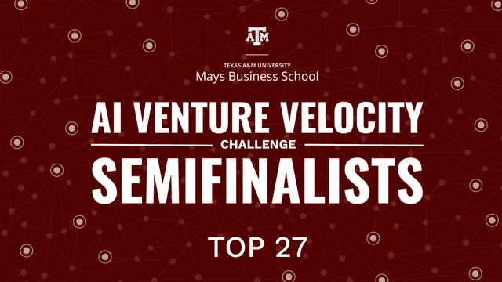
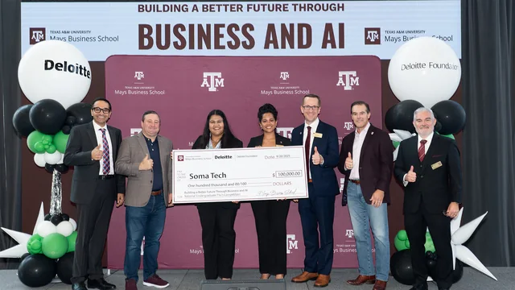
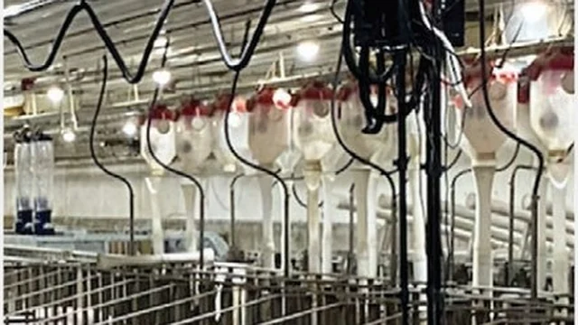

RESOURCES
Read, watch,
and check us out.
The press our work has turned up in, our own video and the podcasts behind it, and the programs and organizations standing with us.
PRESS & RECOGNITION
In the news

News · July 2026Mays announces semifinalists in the national AI Venture Velocity Challenge
Smart Swine named among 27 semifinalists selected from 531 teams across 160 universities.
mays.tamu.edu/news
ProgramAI Venture Velocity Challenge
The national competition itself: format, judging and the September 2026 finals in College Station.
mays.tamu.edu/ai/competition
Magazine · Spring 2026Next Step in Precision Sow Management
PigCHAMP Benchmark, U.S. edition. Dr. Ziteng “Tim” Xu writes up the robotic imaging work behind Smart Swine: 3D images of individual sows every ten minutes, replacing back-pressure testing and manual barn checks.
pigchamp.com · Benchmark 2026WATCH & LISTEN
On camera
 2:31
Our video · June 2026
2:31
Our video · June 2026
Meet Smart Swine
Two and a half minutes to camera: who we are, what happens in a farrowing room and why we decided to point a camera at it.
youtube.com 33:58
Podcast · May 2025
33:58
Podcast · May 2025
Dr. Ziteng Xu: Precision Livestock Technologies
Our advisor Dr. Ziteng “Tim” Xu on The Swine it Podcast Show, on robotic camera systems, respiration monitoring and preventing piglet crushing. The chapter at 18:06 is the problem SPM-01 was built for.
youtube.com · Swine Podcasts 26:40
Podcast · July 2024
26:40
Podcast · July 2024
Dr. Ziteng Xu: Automated Estrus Detection
Tim’s earlier episode, on The Swine it Podcast Show Canada: automated sow monitoring before the work turned toward the farrowing crate.
youtube.com · Swine it CanadaDOWNLOADS
Product brochures
SPM-01 Smart Piglet Monitor
The full product brochure: the dual-axis sensor, sealing, mounting, the app and the validation numbers behind them.
SPM-01_Product_Brochure.pdf Brochure · PDFSPC-01 Smart Piglet Curtain
The concept brochure: the three-second crushing window, the four-posture rule and the curtain that closes it.
SPC-01_Product_Brochure.pdfINDUSTRY & PROGRAMS
The wider network
Pork-industry organizations that helped us reach producers, and the federal programs behind our non-dilutive support.
National Pork Board
Producer research, education and the Pork Checkoff.
pork.org CommunityTexas Pork Producers Association
The state association that helped carry our producer survey.
texaspork.org CommunityMissouri Pork Association
Missouri pig farmers, a second survey distribution channel.
mopork.com Grant programAmerica's Seed Fund (NSF SBIR/STTR)
Non-dilutive seed funding for deep-tech startups, no equity taken.
seedfund.nsf.gov Grant programUSDA-NIFA SBIR/STTR
Competitive grants for small businesses commercializing agricultural innovation.
nifa.usda.gov ProgramMcFerrin Center for Entrepreneurship
Texas A&M's campus-wide entrepreneurship hub.
mcferrin.tamu.eduPork-industry organizations listed here provided letters of support and survey distribution. They are not investors, customers or commercial partners. Federal programs are listed as the sources of non-dilutive grant support, not as endorsements.
Something you couldn't find?
Press kit, technical detail, research collaboration: just ask.